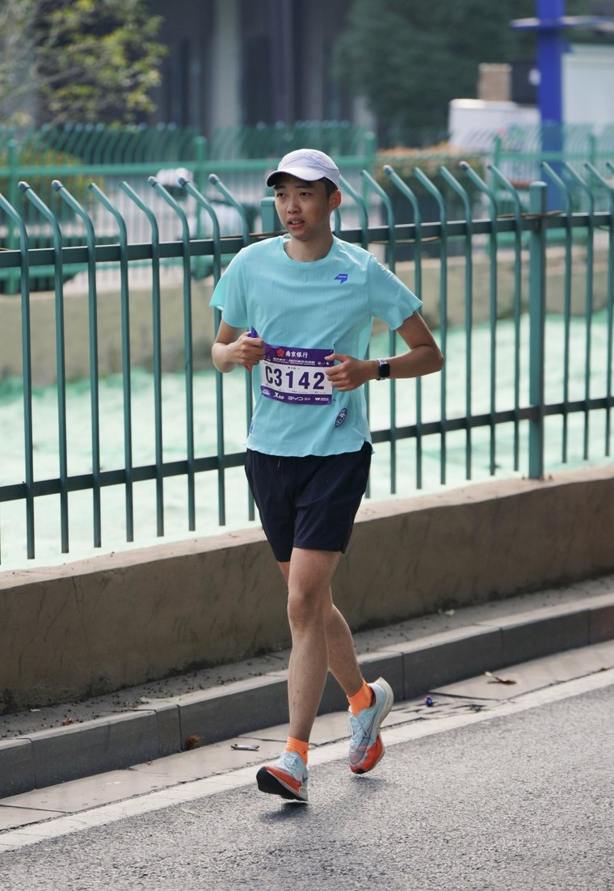

王文昊

关于
About六年数据分析经验，先后服务于金融数据、互联网游戏运营与电信运营商大数据领域。
我习惯把重复的工作变成工具：写过效率提升 24 倍的批量截图程序、跨 6 台服务器的联合查询工具、一键出数的月度报表脚本；也做过从 0 到 1 的数据可视化产品。工作之外，我维护着个人网站集群与一款相机对比工具。
个人项目
Personal Projects-
2026
CAMCOP 相机对比工具
收录 1,140 台相机的五视角结构化数据集，支持多机同屏对比、叠加与并排视图；微信小程序同步上线，扫码即可打开。
独立开发 · 小程序
微信扫一扫，打开「CAMCOP」小程序
1,140 台相机 · 五视角对比 · 随身查询
- 2026 abetterplace2.live 个人网站集群：摄影作品集、Metro 磁贴画廊、马拉松赛历、PEDAL 速度模拟器、相机对比工具，OSS + CDN 全链路运维。 独立开发
履历
Path-
2025 — 至今
南京红松信息技术有限公司/数据工程师
负责电信运营商大数据分析：数据资产建设、指标体系与专题分析、十余省份周期性报表交付，自研 20 余个自动化工具。
-
2022 — 2025
彩讯科技股份有限公司（驻咪咕互动娱乐）/数据分析师
负责月活 2 千万大屏产品的核心指标监控与看板维护；2024 年套娃整改中通过漏斗分析推动分省策略优化，曝光 +5.3%、点击 +8.9%、转化 +9.6%。
-
2021 — 2022
新大陆软件工程有限公司/数据仓库开发工程师
江苏移动经分数据中台数仓全流程开发，Oracle PL/SQL 查询优化与索引重构。
-
2020 — 2021
南京万得资讯科技有限公司/数据分析师
从零搭建全国土地交易数据库（日均采集 10 万+ 条），主导 EDB 商业地产报告模块与九大新一线城市专题报告。
-
2015 — 2019
天津师范大学/软件工程 · 本科
主修数据结构、操作系统、计算机网络与软件项目管理。